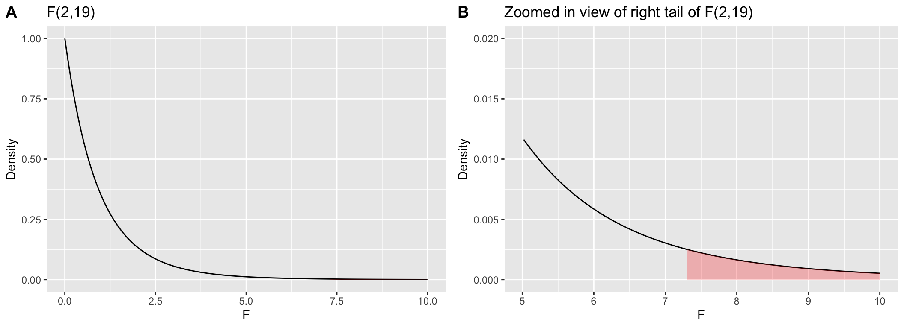
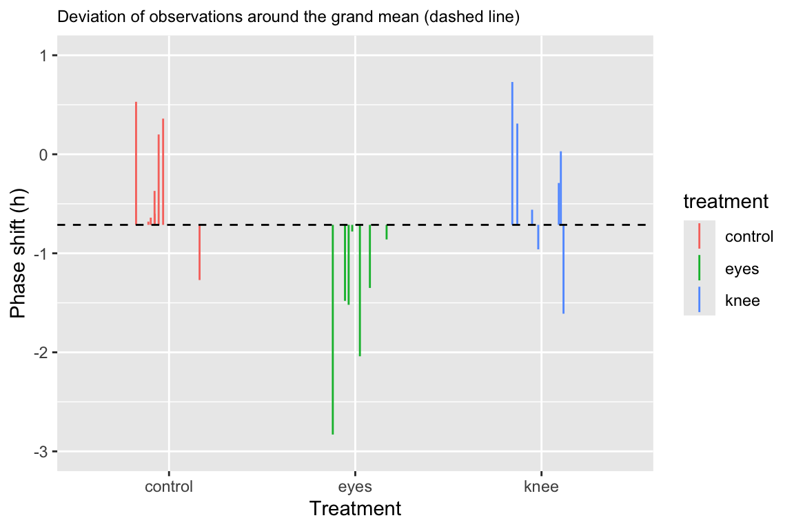
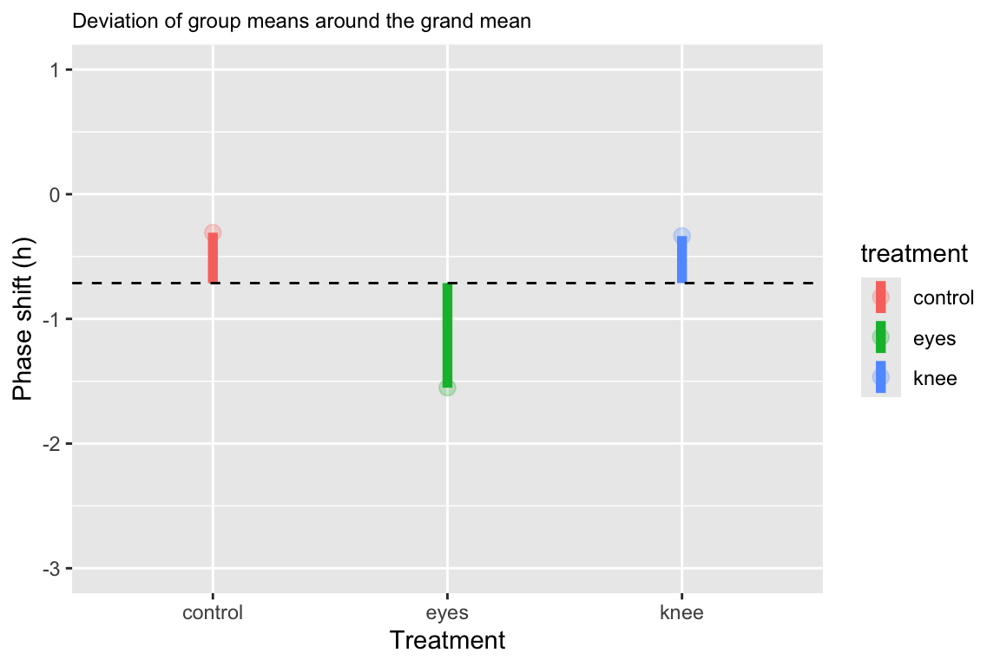
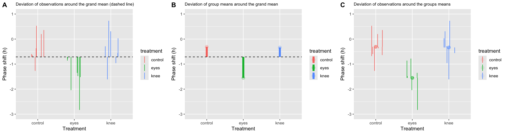

Chapter 20 Analysis of Variance
\(t\)-tests are the standard approach for comparing means between two groups. When you want to compare means between more than two groups a technique called “Analysis of Variance” (ANOVA) is used.
20.1 Hypotheses for ANOVA
When using ANOVA to compare means, the null and alternative hypotheses are:
- \(H_0\): The means of all the groups are equal
- \(H_A\): At least one of the means is different from the others
20.2 ANOVA, assumptions
ANOVA assumes:
- The measurements in every group represent a random sample from the corresponding population
- The varaible of interest is normally distributed
- The variance is approximately the same in all the groups
20.3 ANOVA, key idea
The key idea behind ANOVA is that:
- If the observations in each group are drawn from populations with equal means (and variances) then the variation between group means should be similar to the inter-individual variation within groups.
20.4 Partioning of sum of squares
Another way to think about ANOVA is as a “partitioning of variance”. The total variance among all the individuals across groups can be decomposed into:
variance of the group means around the “grand mean”;
variance of individuals around the group means.
However, rather than using variance we use sums of square deviations around the respectives means (usually shortened to “sums of squares”).
This decomposition is represented visually in the figure below:

Figure 20.1: Whitock and Schluter, Fig 15.1.2 – Illustrating the partitioning of sum of squares into \(MS_{group}\) and \(MS_{error}\) components.
20.5 Mathematical partitioning of sums of squares
Variable \(X\) with a total sample of \(N\) observations, partitioned ito \(k\) groups. The sample size of the g-th group is \(n_g\), and thus \(N = \sum_{g=1}^{k} n_g\). Let \(\overline{X}\) indicate the grand mean of \(X\) and \(\overline{X}_g\) indicate the mean of \(X\) in the g-th group.
Total sums of squares
We call the sum of the squared deviations around the grand mean the “total sum of sqaures” (\(SS_\text{total}\)).
\[ SS_\text{total} = \sum_{i=1}^N (x_i-\overline{X})^2 \]
- The total degrees of freedom is: \(df_\text{total} = N - 1\)
Group sum of squares and group mean square deviation
The sum of squared deviations of the group means around the grand mean is called the “group sum of squares”: \[ SS_\text{group} = \sum_{g=1}^kn_g(\overline{X}_g - \overline{X})^2 \]
The degrees of freedom associated with the group sum of squares is: \(df_\text{group} = k - 1\)
Define the “group mean squared deviation” as: \[ MS_\text{group} = \frac{SS_\text{group}}{k-1} \]
Error sum of squares and error mean square deviation
The sum of squared deviations of the individual observations about their respective group means is called the “error sum of squares”: \[ SS_\text{error} = \sum_{g=1}^k\sum_{i=1}^{n_g} (x_{i,g} - \overline{X}_g)^2 \]
The degrees of freedom associated with the error sum of squares is: \(df_\text{error} = N - k\)
Define the “error mean squared deviation” as: \[ MS_\text{error} = \frac{SS_\text{error}}{N-k} \]
Variation explained: \(R^2\)
We can summarize the contribution of the group differences to the total variation in the data, using the \(R^2\) value.
To do this we note that the total sum of squares is the sum of the group and error sum of squares: \[ SS_\text{total} = SS_\text{group} + SS_\text{error} \]
The \(R^2\)-value is thus defined as: \[ R^2 = \frac{SS_\text{groups}}{SS_\text{total}} \]
20.6 ANOVA test statistic and sampling distribution
F-statistic
The test statistic used in ANOVA is designated \(F\), and is defined as follows:
\[ F = \frac{\text{group mean square}}{\text{error mean square}} = \frac{\text{MS}_\text{group}}{\text{MS}_\text{error}} \]
Under the null hypothesis, the between group and within group variances are similar and thus the \(F\) statistic should be approximately 1.
Large values of the \(F\)-statistic means that the between group variance exceeds the within group variance, indicating that at least one of the means is different from the others
The F-distribution
The sampling distribution of the \(F\)-statistic is called the \(F\)-distribution.
The \(F\)-distribution depends on two parameters:
the degrees of freedom associated with the group sum of squares, \(df_\text{group} = k - 1\);
the degrees of freedom associated with the error sum of squares, \(df_\text{error} = N - k\);
We designate a particular \(F\)-distribution as \(F_{k-1,N-k}\). We will illustrate what an F-distribution looks like for particular parameters below.
20.7 ANOVA tables
The results of an analysis of variance test are often presented in the form of a table organized as follows:
| Source | \(SS\) | \(df\) | \(MS\) | \(F\) |
|---|---|---|---|---|
| Group | \(SS_\text{group}\) | \(k-1\) | \(MS_\text{group}\) | \(MS_\text{group}/MS_\text{error}\) |
| Error | \(SS_\text{error}\) | \(N-k\) | \(MS_\text{error}\) | |
| Total | \(SS_\text{total}\) | \(N-1\) |
20.8 The aov() function
As you would suspect, there is a built in R function to carry out ANOVA. This function is designated aov(). aov takes a formula style argument where the variable of interest is on the left, and the grouping variable indicated on the right.
aov(variable.of.interest ~ grouping.variable, data = df)20.9 Example, circadian rythm data
Your textbook describes an examplar data set from a study designed to test the effects of light treatment on circadian rhythms (see Whitlock & Schluter, Example 15.1).
- The investigators randomly assigned 22 individuals to one of three treatment groups and measured phase shifts in melatonin production. The treatment groups were:
- control group (8 indiviuals)
- light applied on the back of the knee (7 individuals)
- light applied to the eyes (7 individuals)
These data are available at: ABD-circadian-rythms.csv
The null and alternative hypotheses associated with the ANOVA of these data are:
- \(H_0\): the means of the treatments groups are the same
- \(H_1\): the mean of at least one of the treatment groups is different from the others
Libraries
Load the data
circadian <- read_csv("https://raw.githubusercontent.com/bio304-class/bio304-course-notes/master/datasets/ABD-circadian-rythms.csv")The data is very simple: just two columns indicating treatment group and the variable of interest:
head(circadian, n=3)
#> # A tibble: 3 × 2
#> treatment shift
#> <chr> <dbl>
#> 1 control 0.53
#> 2 control 0.36
#> 3 control 0.220.9.1 Visualizing the data
As is our standard practice, let’s start by visualizing the data. We’ll create a point plot depicting the observations colored by treatment group.
# we're going to re-use our jittering across plots so
# assign it to a variable
pd <- position_jitter(width=0.2, height=0)
point.plot <-
circadian %>%
ggplot(aes(x=treatment, y=shift,
color=treatment, group=row.names(circadian))) +
geom_point(position = pd) +
ylim(-3,1)+
labs(x = "Treatment", y = "Phase shift (h)")
point.plot
20.9.2 Carrying out the ANOVA
From our visualization it certainly seems like there may be differences among the group (treatment) means. Let’s test this formally using the aov() function:
The summary function applied to the aov fit will print out a typical ANOVA table and calculate the associated P-value for the \(F\) test statistic:
summary(circadian.aov)
#> Df Sum Sq Mean Sq F value Pr(>F)
#> treatment 2 7.224 3.612 7.289 0.00447 **
#> Residuals 19 9.415 0.496
#> ---
#> Signif. codes: 0 '***' 0.001 '**' 0.01 '*' 0.05 '.' 0.1 ' ' 1If you want the ANOVA table in a form you can compute with, the broom::tidy function we explored previously comes in handy:
circadian.aov.table <- tidy(circadian.aov)
circadian.aov.table
#> # A tibble: 2 × 6
#> term df sumsq meansq statistic p.value
#> <chr> <dbl> <dbl> <dbl> <dbl> <dbl>
#> 1 treatment 2 7.224 3.612 7.289 0.004472
#> 2 Residuals 19 9.415 0.4955 NA NAThe table above tells us that the \(F\)-statistic for this ANOVA is ~7.29. The table also tells us that the P-value associated with this F-statistic, is quite small, P-value < 0.005.
The P-value can be calculated explicitly using the pf() function (similar to the pnorm() and pt() functions we’ve seen previously):
circadian.F.stat <- circadian.aov.table$statistic[1]
pf(circadian.F.stat, df1 = 2, df2 = 19, lower.tail = FALSE)
#> [1] 0.004472271Note that we set lower.tail = FALSE to calculate the probability of getting an F-statistic this large or greater.
Visualizing the F-distribution
Let’s draw the corresponding F-distribution, \(F_{2,19}\), using the df() function (parallel to dnorm() and dt(), with the region corresponding to an F-statistic greater than 7.29 shaded red. Because the area in the right tail we’re interested in is quite small, in a second plot we’ve zoomed in on this region.
fdist <- data_frame(f = seq(0, 10, length.out = 250),
density = df(f, df1=2, df2=19))
plot.a <-
ggplot(fdist, aes(f, density)) +
geom_line() +
geom_area(data = filter(fdist, f >= 7.29), fill='red', alpha=0.25) +
labs(x = "F", y = "Density", title="F(2,19)")
plot.b <-
plot.a + xlim(5,10) + ylim(0, 0.02) +
labs(title = "Zoomed in view of right tail of F(2,19)")
plot_grid(plot.a, plot.b, labels="AUTO")
Critical values of the F-distribution
If we wanted to know what the critical F value is for a corresponding type I error rate we can use the qf() function:
20.10 ANOVA calculations: Step-by-step
The aov() function carries out all the ANOVA calculations behind the scenes. It’s useful to pull back the curtain and see how the various quantities are calculated.
Total SS
grand.mean <- mean(circadian$shift)
# total sum of squares
total.table <-
circadian %>%
summarize(SS = sum((shift - grand.mean)**2),
df = n() - 1)
total.table
#> # A tibble: 1 × 2
#> SS df
#> <dbl> <dbl>
#> 1 16.64 21Group SS and MS
We use group_by and summarize to calculates group means and the group deviates (the difference between the group means and the grand mean):
group.df <-
circadian %>%
group_by(treatment) %>%
summarize(n = n(),
group.mean = mean(shift),
grand.mean = grand.mean,
group.deviates = group.mean - grand.mean)
group.df
#> # A tibble: 3 × 5
#> treatment n group.mean grand.mean group.deviates
#> <chr> <int> <dbl> <dbl> <dbl>
#> 1 control 8 -0.3088 -0.7127 0.4040
#> 2 eyes 7 -1.551 -0.7127 -0.8387
#> 3 knee 7 -0.3357 -0.7127 0.3770Having calculated the group deviates, we calculate the group sum of squares and related quantities:
group.table <-
group.df %>%
summarize(SS = sum(n * group.deviates**2),
k = n(),
df = k-1,
MS = SS/df)
group.table
#> # A tibble: 1 × 4
#> SS k df MS
#> <dbl> <int> <dbl> <dbl>
#> 1 7.224 3 2 3.612Error SS and MS
Next we turn to variation of the individual observations around the group means, which is the basis of the error sum of squares and mean square. Again we calculate this in two steps:
error.df <-
circadian %>%
group_by(treatment) %>%
mutate(group.mean = mean(shift),
error.deviates = shift - group.mean) %>%
summarize(SS = sum(error.deviates**2),
n = n())
error.df
#> # A tibble: 3 × 3
#> treatment SS n
#> <chr> <dbl> <int>
#> 1 control 2.670 8
#> 2 eyes 2.993 7
#> 3 knee 3.752 7Now we calculate the error sum of squares and related quantities:
error.table <-
error.df %>%
summarize(SS = sum(SS),
k = n(),
N = sum(n),
df = N - k,
MS = SS/df)
error.table
#> # A tibble: 1 × 5
#> SS k N df MS
#> <dbl> <int> <int> <int> <dbl>
#> 1 9.415 3 22 19 0.4955Calculating the F-statistic and \(R^2\)
Having calculated our estimates of between group variance and within group variance (\(MS_\text{group}\) and $MS_) we’re now ready to calculate the \(F\) test statistic.
The variation “explained” by the group is:
Thus about 43% of the total sum of squared deviation among subjects, with respect to the phase shift variable, is explained by differences in light treatment.
20.11 Visualizing the partitioning of sum-of-squares
Total SS
total.plot <-
circadian %>%
ggplot(aes(x=treatment, y=shift,
color=treatment, group=row.names(circadian))) +
geom_linerange(aes(ymin = grand.mean, ymax = shift), position = pd) +
geom_hline(yintercept = grand.mean, linetype='dashed') +
ylim(-3,1)+
labs(x = "Treatment", y = "Phase shift (h)",
title = "Deviation of observations around the grand mean (dashed line)") +
theme(plot.title = element_text(size=9))
total.plot
Group SS
Let’s visualize the difference of the group means from the grand mean:
group.plot <-
group.df %>%
ggplot(aes(x = treatment, y = group.mean, color=treatment)) +
geom_linerange(aes(ymin = grand.mean, ymax = group.mean), size=2) +
geom_point(size = 3, alpha = 0.25) +
geom_hline(yintercept = grand.mean, linetype='dashed') +
ylim(-3,1) +
labs(x = "Treatment", y = "Phase shift (h)",
title = "Deviation of group means around the grand mean") +
theme(plot.title = element_text(size=9))
group.plot
Error SS
We can visualize the individual deviates around the group means as so:
error.plot <-
circadian %>%
group_by(treatment) %>%
mutate(group.mean = mean(shift)) %>%
ggplot(aes(x = treatment, y = shift, color = treatment)) +
geom_point(aes(y = group.mean),size=3,alpha=0.1) +
geom_linerange(aes(ymin = group.mean, ymax = shift), position = pd) +
ylim(-3,1) +
labs(x = "Treatment", y = "Phase shift (h)",
title = "Deviation of observations around the groups means") +
theme(plot.title = element_text(size=9))
error.plotCombined visualization
We can combine our three plots created above into a single figure using cowplot::plot_grid:
combined.plot <-plot_grid(total.plot, group.plot, error.plot,
labels = c("A","B","C"), nrow = 1)
combined.plot
20.12 Which pairs of group means are different?
If an ANOVA indicates that at least one of the group means is different than the others, the next question is usually “which pairs are different?”. There are slighly different tests for what are called “planned” versus “unplanned” comparisons. Your textbook discusses the differences between these two types
Here we focus on a common test for unplanned comparisons, called the Tukey Honest Significant Differences test (referred to as the Tukey-Kramer test in your textbook). The Tukey HSD test controls for the “family-wise error rate”, meaning it tries to keep the overall false positive (Type I error) rate at a specified value.
20.12.1 Tukey-Kramer test
The function TukeyHSD implements the Tukey-Kramer test. The input to TukeyHSD is the fit from aov:
TukeyHSD(circadian.aov)
#> Tukey multiple comparisons of means
#> 95% family-wise confidence level
#>
#> Fit: aov(formula = shift ~ treatment, data = circadian)
#>
#> $treatment
#> diff lwr upr p adj
#> eyes-control -1.24267857 -2.1682364 -0.3171207 0.0078656
#> knee-control -0.02696429 -0.9525222 0.8985936 0.9969851
#> knee-eyes 1.21571429 0.2598022 2.1716263 0.0116776Here again, the broom::tidy function comes in handy:
tidy(TukeyHSD(circadian.aov))
#> # A tibble: 3 × 7
#> term contrast null.value estimate conf.low conf.high adj.p.value
#> <chr> <chr> <dbl> <dbl> <dbl> <dbl> <dbl>
#> 1 treatment eyes-control 0 -1.243 -2.168 -0.3171 0.007866
#> 2 treatment knee-control 0 -0.02696 -0.9525 0.8986 0.9970
#> 3 treatment knee-eyes 0 1.216 0.2598 2.172 0.01168The Tukey HSD test by default give us 95% confidence intervals for the differences in means between each pair of groups, and an associated P-value for the null hypothesis of equal means between pairs. Interpretting the results above, we see that we fail to reject the null hypothesis of equal means for the knee and control treatment groups (i.e. we have no statistical support to conclude they are different). However, we reject the null hypothesis for equality of means between control and eye treatments and between knee and eye treatements. We have evidence that light treatments applied to the eye cause a mean negative shift in the phase of melatonin production relative to control and knee treatment groups.
20.13 Repeatability
Nearly every measure of a continuous measurement or assay we apply in biology (and other sicences) has associated with it some measurement error.
Measurement error is usually not “biological variation” of interest, but rather “technical variation” associated with our ability to measure quantities of interest precisely
- Example: Have three people independently measure the length of a human femur to the nearest millimeter. Unless the values are aggressively rounded, there is a high likelihood that you’ll get three different values.
Estimating Repeatability using ANOVA
ANOVA can be used to estimate the Repeatability of a measure, which provides a way to quantify how much of the variance we observe between individuals is due to measurement error.
Estimating Repeatability: Experimental steps
- Repeatedly, but independently, measure the same variable in the same individual or other unit of observation
- Carry out the same repeated measurements across individuals
Estimating Repeatability: Statistical steps
- Calculate \(MS_\text{groups}\) and \(MS_\text{error}\) where individuals are the grouping unit.
- Estimate the variance among groups, \(s_A^2\) as: \[ s_A^2 = \frac{MS_\text{groups} - MS_\text{error}}{n} \]
where \(n\) is the number of replicate measures per individual.
Estimate the repeatability as: \[ \text{Repeatability} = \frac{s_A^2}{s_A^2 + MS_\text{error}} \]
\(0 \leq \text{Repeatability} \leq 1\); values near zero indicate nearly all variance is due to measurement error, values near one indicate small fraction of variance due to measurement error
Repeatability: Walking stick example
Nosil and Crespi measured various morphological features of walking stick insects from digital photographs. For each specimen they took two independent photographs and measured femur length (in cm) on each photograph.
walking.sticks <- read_csv("https://github.com/bio304-class/bio304-course-notes/raw/master/datasets/ABD-walking-sticks.csv")by.specimen <-
walking.sticks %>%
group_by(specimen) %>%
summarize(min.fl = min(femurLength), max.fl = max(femurLength), avg.fl = 0.5*(min.fl + max.fl)) %>%
arrange(avg.fl) %>%
ungroup() %>%
mutate(rank.fl = rank(avg.fl, ties.method = "first"))
ggplot(by.specimen, aes(x = rank.fl)) +
geom_point(aes(y = min.fl), color="firebrick") +
geom_point(aes(y = max.fl + 0.0025), color="firebrick") +
geom_linerange(aes(ymin = min.fl, ymax = max.fl + 0.0025)) +
labs(x = "Individual walking sticks", y = "Femur length (cm)") +
theme_classic()+
theme(axis.text.x=element_blank(),
axis.ticks.x=element_blank()) First we carry out the ANOVA in the standard way, using the specimen variable as the grouping variable:
sticks.aov <- aov(femurLength ~ as.factor(specimen),
data = walking.sticks)
sticks.table <- tidy(sticks.aov)
sticks.table
#> # A tibble: 2 × 6
#> term df sumsq meansq statistic p.value
#> <chr> <dbl> <dbl> <dbl> <dbl> <dbl>
#> 1 as.factor(specimen) 24 0.05913 0.002464 6.921 0.000004077
#> 2 Residuals 25 0.008900 0.0003560 NA NAFrom the ANOVA table, use \(MS_\text{group}\) and \(MS_\text{error}\) to calculate \(s_A\):
repeatability.table <- data_frame(
MS.groups = sticks.table$meansq[1],
MS.error = sticks.table$meansq[2],
sA = (MS.groups - MS.error)/2,
repeatability = sA/(sA + MS.error))
repeatability.table
#> # A tibble: 1 × 4
#> MS.groups MS.error sA repeatability
#> <dbl> <dbl> <dbl> <dbl>
#> 1 0.002464 0.0003560 0.001054 0.7475From the table we calculated:
- \(s_A^2 =\) 0.0010539
- \(\text{Repeatability} =\) 0.7475028
A repeatability of 0.75 indicates that we would estimate that ~75% of the total variance in femure length measurements in our population of walking stick insects is the result of true differences in femur length between individuals, while roughly 25% of the variance is attributable to measurement error.